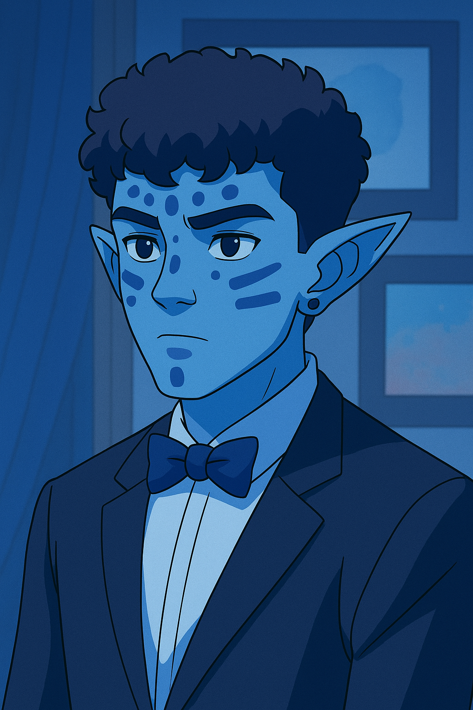

Bienvenido a la Fan Page de Avatar
"Avatar: La Leyenda de Aang" es una serie animada que narra las aventuras de Aang, el último Maestro Aire y Avatar, quien debe restaurar el equilibrio en el mundo.
"Avatar: La Leyenda de Aang" es una serie animada que narra las aventuras de Aang, el último Maestro Aire y Avatar, quien debe restaurar el equilibrio en el mundo.